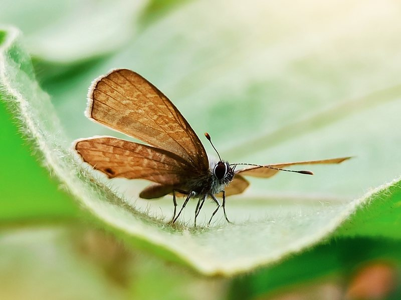
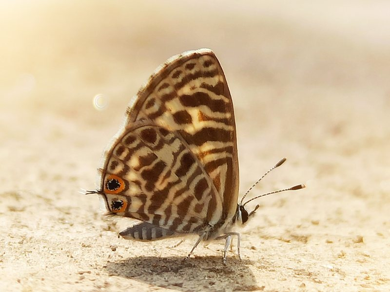

UX Case Study
PopGamma (opens in a new tab)
A student-focused product’s home screen, redesigned around one principle: the student’s journey first, feature count last.
View project ↗UI/UX Designer - Jamshedpur, India
1.6+ years of turning ambiguous ideas into shipped, developer-ready products - solo, end to end.
Selected work
Case studies in depth, explorations in breadth. Click any card for the full story.
A student-focused product’s home screen, redesigned around one principle: the student’s journey first, feature count last.
View project ↗


End-to-end UX case study for a challan management platform - making fine payments simple for citizens.
View project ↗

Attendance, analytics, and workforce management in one calm, light interface.
View project ↗

A travel and adventure booking website - exploration made inviting.
View project ↗
Landing page hero for a workforce management SaaS.
View project ↗ (opens in a new tab)


A minimal landing experience for an AI note-taking tool.
View project ↗


A minimal mobile shopping experience for furniture.
View project ↗


An enterprise dashboard for environmental monitoring - data visualization with purpose.
View project ↗Design process
A flexible process that helps me move from ambiguity to clear, usable experiences.
Get clear on the problem, the people using the product and the constraints shaping the work.
Ask questions, map possibilities and explore user flows before settling on a direction.
Organise information and define the key screens, states and interactions.
Turn the structure into wireframes, thoughtful interfaces and interactive prototypes.
Review the details, incorporate feedback and prepare clear, developer-ready handoff.
About
From biotech lab notebooks to Figma files - the method never changed.
I came to design from a science and tech background: a BSc in Biotechnology, followed by an MCA. During my MCA, I found UI design and knew it fit. It combines systems thinking with understanding people.
At Antro PAI Technologies, I worked as the sole UI/UX designer for 1.6 years, handling multiple live products at once. No senior designer, no research team. I learned to make solid design decisions on my own and stand behind them.
What I bring
I’m currently strengthening my UX research and usability skills, and sharing my work through detailed case studies.
Beyond the screens
The principles I try to bring into every project, big or small.
Every element should have a reason to exist. Good design makes the next step feel obvious.
Thoughtful states, useful feedback and considered micro-interactions make products feel intuitive.
Good ideas often begin with observation: asking why, noticing patterns and looking beyond the screen.
Experience
One designer, many products, zero excuses.
Mar 2024 to Aug 2025
Off the clock
Butterflies, tiny visitors, and fleeting moments from the natural world. A little reminder to slow down and notice what's around us.





Toolkit
A mix of design craft, UX thinking and the tools I use to bring ideas to life.
The labels reflect my current level of practice—I'm continuing to build depth through hands-on projects.
Currently exploring
Areas I’m actively learning about and bringing into my design practice.
Contact
Got a problem worth solving? I’d love to hear about it.
I’m open to UI/UX roles and freelance projects.
suchismita.aju@